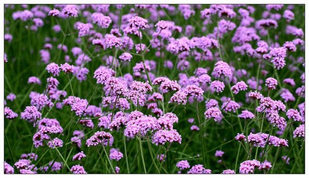

世界名花园
始建于2010年，面积75亩。是展示世界多种名花的百花园，园内栽植牡丹20亩，包括观赏牡丹9大色系、120个品种、12000株，为中国地栽观赏牡丹最南端之地，名贵品种有黄色的‘金阁’、‘姚黄’，洛阳红等，同时配套栽培展示芍药60个品种2000多株。其它区域根据季节不同，结合花卉生长特性展示世界名花，春季展示郁金香、风信子、洋水仙等球根花卉，夏季展示盆栽荷花和马鞭草、薰衣草等时尚草花。
姚黄
姚黄是牡丹四大名品之一。落叶灌木，株形直立，枝条细硬，分枝短而粗。叶通常为二回三出复叶，顶生小叶宽卵形，表面绿色，无毛，背面淡绿色，有时具白粉，沿叶脉疏生短柔毛或近无毛。花单生枝顶，苞片5，长椭圆形，大小不等；萼片5，绿色，宽卵形，大小不等；花朵皇冠型，有时呈金环型。花蕾圆尖形，端部常开裂；花淡黄色；花丝上部白色，花药长圆形，花盘革质，杯状，紫红色；心皮5，密生柔毛。蓇葖长圆形，密生黄褐色硬毛。花期5月；果期6月。
洛阳红
牡丹品种，落叶灌木。株型高，直立。分枝较细而硬。叶宽卵形，表面绿色，无毛，背面淡绿色，有时具白粉，沿叶脉疏生短柔毛或近无毛。花单生枝顶，苞片5，长椭圆形，大小不等；萼片5，绿色，宽卵形，大小不等；花朵蔷薇型。花蕾圆尖形。花紫红色，有光泽。花丝上部白色，花药长圆形，花盘革质，杯状，紫红色；心皮5，密生柔毛。蓇葖长圆形，密生黄褐色硬毛。花期5月；果期6月。
郁金香
百合科郁金香属的多年生草本植物，具鳞茎。叶3-5枚，条状披针形至卵状披针状，花单朵顶生，大型而艳丽，花被片红色或杂有白色和黄色，有时为白色或黄色，长5-7厘米，宽2-4厘米，6枚雄蕊等长，花丝无毛，无花柱，柱头增大呈鸡冠状，花期4-5月。
风信子
是天门冬目、风信子科、风信子属多年草本球根类植物，鳞茎卵形，有膜质外皮，皮膜颜色与花色成正相关，未开花时形如大蒜，原产地中海沿岸及小亚细亚一带，是研究发现的会开花的植物中最香的一个品种。喜阳光充足和比较湿润的生长环境，要求排水良好和肥沃的沙壤土等。
